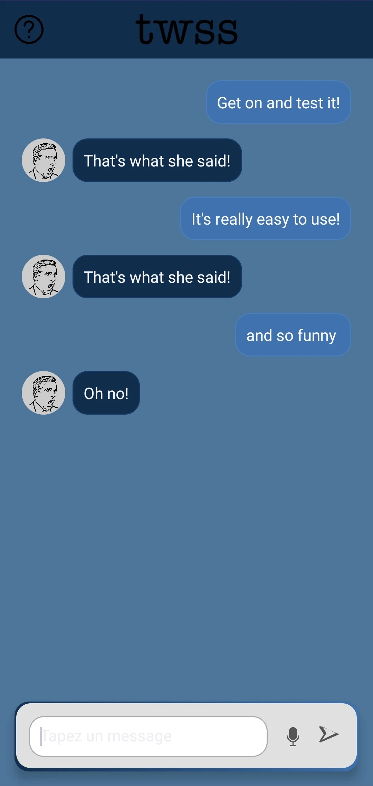
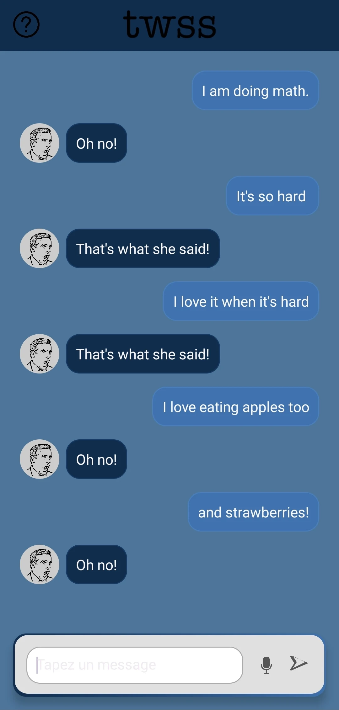

That's What She Said
Application Android – Modèle IA inspiré de la série The Office


Contexte
Inspirée par la série The Office, l'application TWSS permet de détecter automatiquement les phrases ambigües à l’aide d’un modèle d’intelligence artificielle entraîné sur un jeu de données annoté manuellement.
Fonctionnalités
- Interface Android (Java / XML)
- Modèle de classification personnalisé
- Disponible sur le Play Store
- Interface simple et accessible